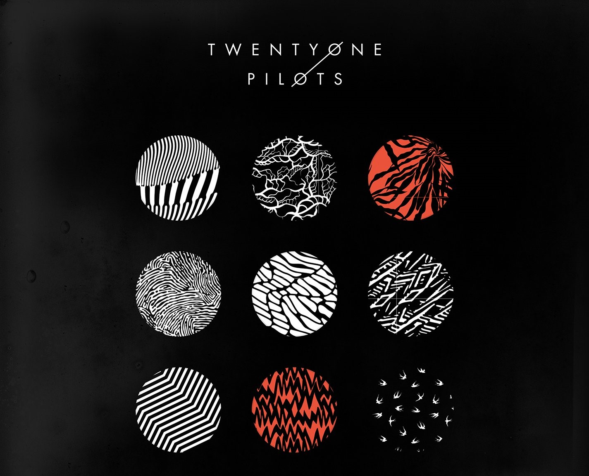
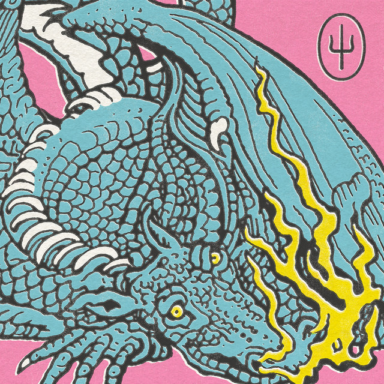
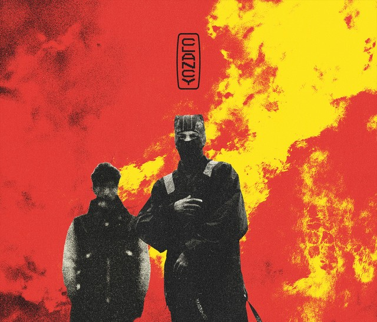

1. Blurryface
Tema: las inseguridades de Tyler convertidas en personaje.
Conoce a Blurryface y a los nueve obispos que gobiernan DEMA, y descubre las pistas escondidas en la portada del álbum.
Ver exposición Ir a la galeríaCada sala recorre una etapa del lore de twenty one pilots, desde la presentación de DEMA hasta la rebelión de Clancy. Se recomienda visitarlas en orden.

Tema: las inseguridades de Tyler convertidas en personaje.
Conoce a Blurryface y a los nueve obispos que gobiernan DEMA, y descubre las pistas escondidas en la portada del álbum.
Ver exposición Ir a la galeríaTema: DEMA, el Vialism y la historia principal del lore.
Recorre la ciudad, la religión que mantiene cautivos a sus habitantes y a los Banditos que se oponen a ella.
Ver exposición Ir a la galería
Tema: DEMA vuelve a tomar la palabra.
La era de la "propaganda" de DEMA.
Ver exposición Ir a la galería
Tema: la rebelión de Clancy y el Torchbearer.
El cierre de la historia de DEMA y el enfrentamiento con Nico.
Ver exposición Ir a la galería
Tema: la era más reciente.
La etapa que continúa la historia después de Clancy.
Ver exposición Ir a la galería